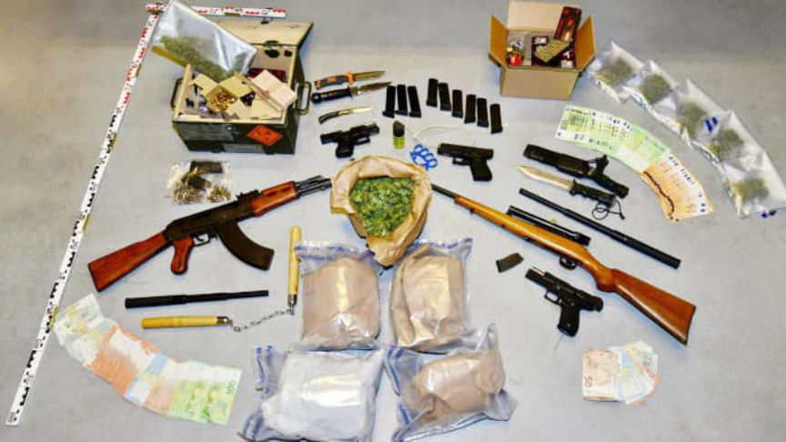
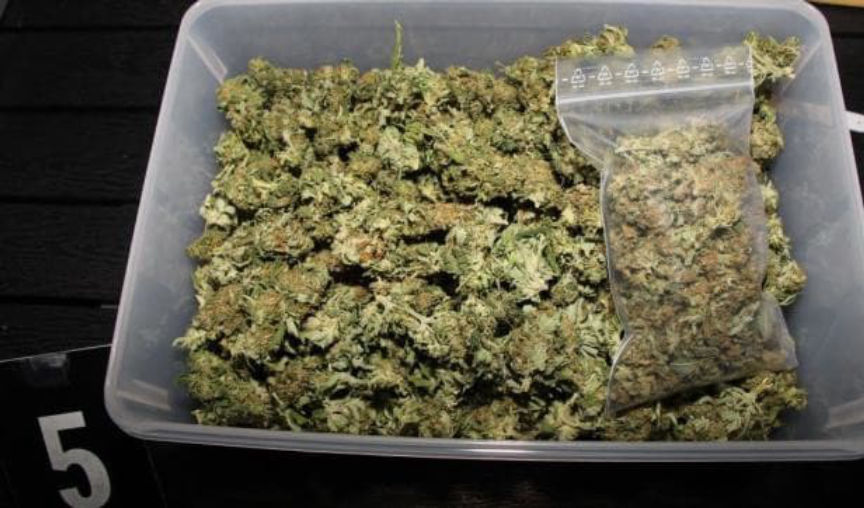
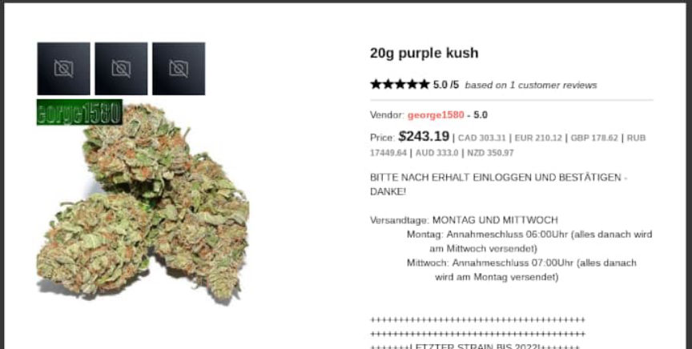
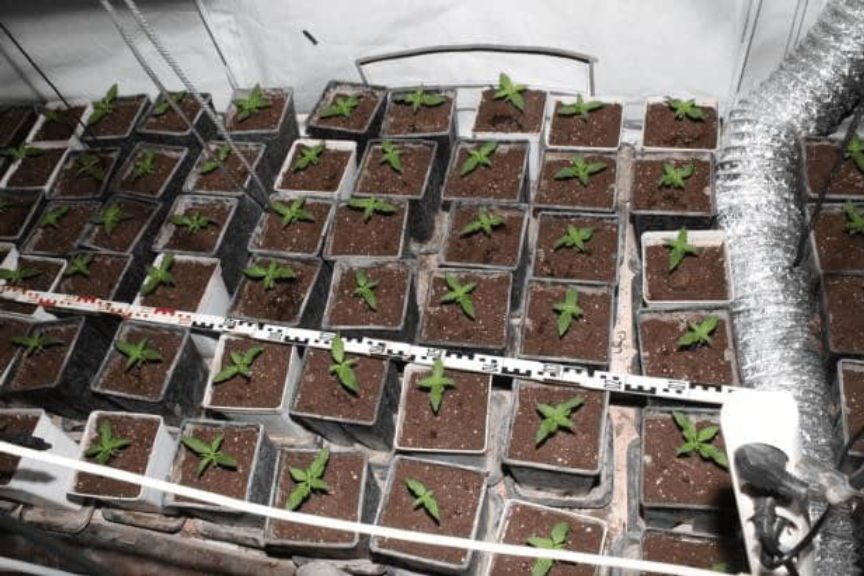
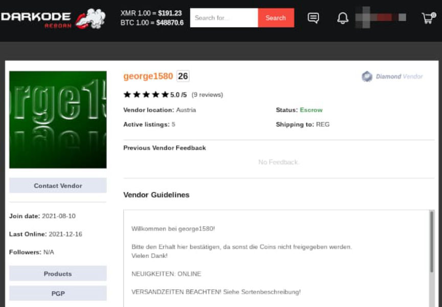
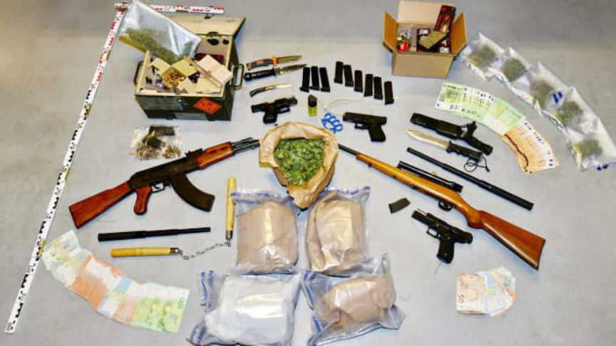
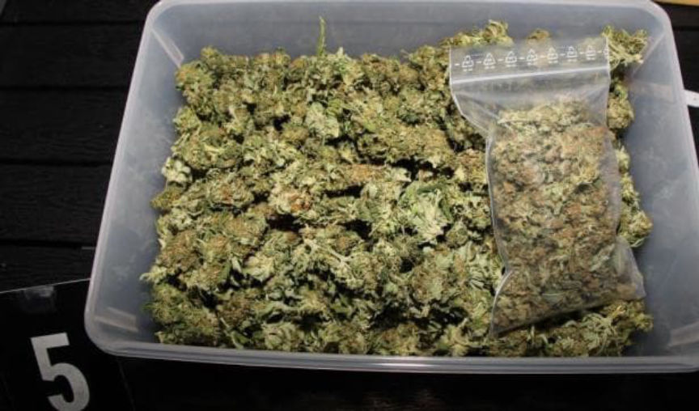
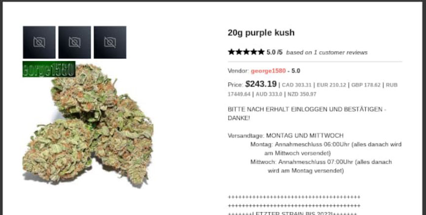
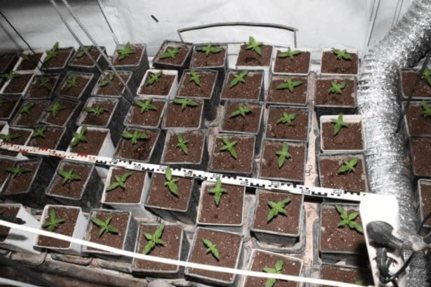
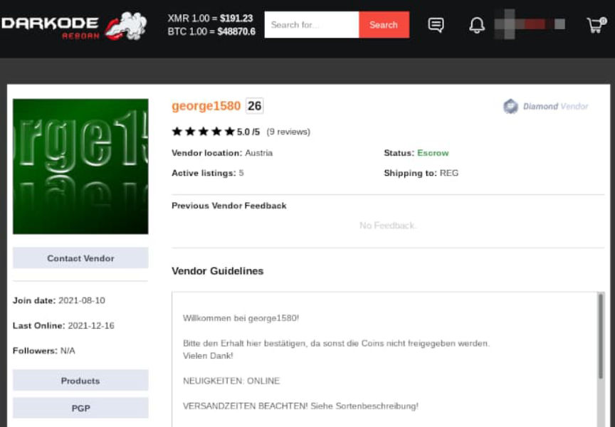

Marijuana Vendor George1580 Arrested in Austria
~2 min read | Published on 2021-12-22, tagged Arrested, Darkweb-Vendor using 408 words.
Authorities in Austria arrested five suspects for allegedly selling marijuana on the darkweb under the username “George1580.”
According to reports, the five suspects, three men, and two women had been involved in marijuana distribution since 2011. They allegedly grew the cannabis in five locations in Vienna and Lower Austria. The suspects distributed it through several darkweb marketplaces, including Dream Market, Empire, Darkode, and Cannazon. They sold under the username “George1580.”

An investigation led by the Federal Criminal Police Office and the Vienna State Police Directorate resulted in the arrests of the suspected drug dealers. During the investigation, investigators established that the main suspect, a 34-year-old man, had managed the vendor accounts. The two women aged 33 and 48 were in charge of renting residences in which the group could grow marijuana. The other two men aged 39 and 34 grew the marijuana plants, prepared the marijuana for distribution, packaged orders, and dropped packages off at different mailboxes.

The suspects placed cannabis in air-tight packages before dropping them off at mailboxes in the region. In addition to making sure they did not leave their fingerprints on the packages, the suspects made sure the packages varied in appearance. Some of the suspects’ regular clients had their drug packages dropped off in dead drops.

Investigators established that the suspects had distributed more than 100 kilograms of marijuana in more than 9,000 orders since 2016. Investigators believe the suspects mailed half a kilo to one kilo of cannabis every week.

The investigators arrested the suspects on December 8, 2021, following a lengthy investigation. The main suspect was arrested in the company of his five-year-old child while on his way to mail drug packages.
Investigators then searched several properties in Vienna and Lower Austria. The searches resulted in the seizure of several kilos of cannabis, an undisclosed amount of cash, three legally owned handguns, and other illegally owned weapons including a Kalashnikov-style rifle. [DNL: I can’t tell if

The three men were arrested and detained, while the two women were released.
According to reports, the five suspects, three men, and two women had been involved in marijuana distribution since 2011. They allegedly grew the cannabis in five locations in Vienna and Lower Austria. The suspects distributed it through several darkweb marketplaces, including Dream Market, Empire, Darkode, and Cannazon. They sold under the username “George1580.”

Some of the items seized during the execution of search warrant at the house of a suspect.
An investigation led by the Federal Criminal Police Office and the Vienna State Police Directorate resulted in the arrests of the suspected drug dealers. During the investigation, investigators established that the main suspect, a 34-year-old man, had managed the vendor accounts. The two women aged 33 and 48 were in charge of renting residences in which the group could grow marijuana. The other two men aged 39 and 34 grew the marijuana plants, prepared the marijuana for distribution, packaged orders, and dropped packages off at different mailboxes.

One of the vendor's listings on Darkode.
The suspects placed cannabis in air-tight packages before dropping them off at mailboxes in the region. In addition to making sure they did not leave their fingerprints on the packages, the suspects made sure the packages varied in appearance. Some of the suspects’ regular clients had their drug packages dropped off in dead drops.

One of the vendor's listings on Darkode.
Investigators established that the suspects had distributed more than 100 kilograms of marijuana in more than 9,000 orders since 2016. Investigators believe the suspects mailed half a kilo to one kilo of cannabis every week.

It appears as if the vendor still has an active account on Darkode and that it was accessed by the police.
The investigators arrested the suspects on December 8, 2021, following a lengthy investigation. The main suspect was arrested in the company of his five-year-old child while on his way to mail drug packages.
Investigators then searched several properties in Vienna and Lower Austria. The searches resulted in the seizure of several kilos of cannabis, an undisclosed amount of cash, three legally owned handguns, and other illegally owned weapons including a Kalashnikov-style rifle. [DNL: I can’t tell if
that
is an AK-47 or AKM. | nvm, reader said AK.]
It appears as if the vendor still has an active account on Darkode and that it was accessed by the police.
The three men were arrested and detained, while the two women were released.